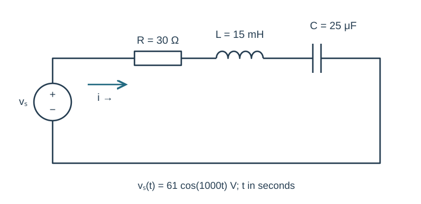
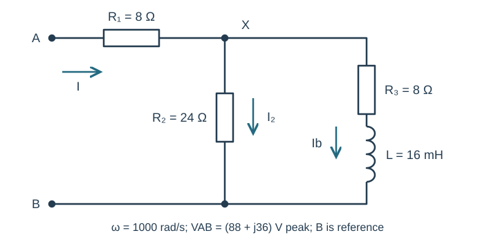
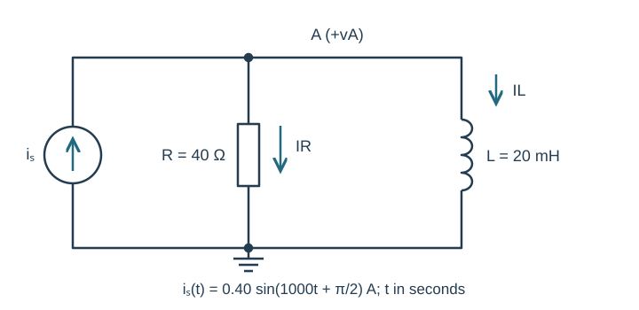
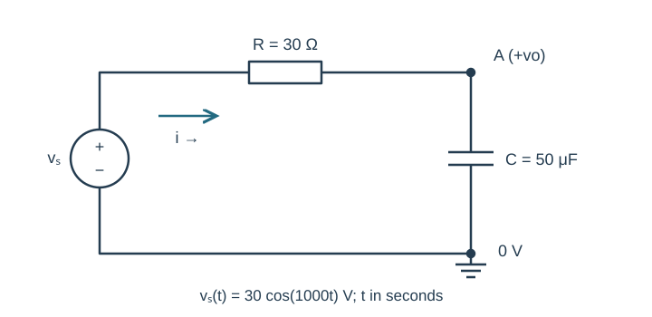
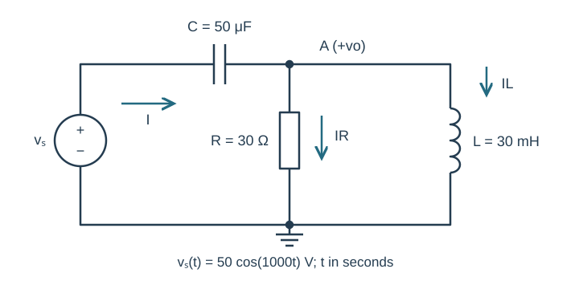

Course practice / Batch 17 / 2026-10-12 PDT
ENGR 202
正弦、相量与阻抗
Sinusoids, phasors & impedance · 第 17 组：HW 1 风格 5 题 + HW 2 风格 5 题
Absorb a negative sine amplitude into phase
The voltage is \(v(t)=-8\sin(400\pi t-\pi/6)\;\mathrm V\), with t in seconds.
- Rewrite as a positive-amplitude cosine with positive angular frequency. Find frequency, period and the cosine-reference peak phasor in rectangular and polar form.
- Find v(0), the sign of its initial slope, and the first downward zero crossing, minimum and positive maximum at or after t=0. Give event times in ms.
- Sketch one full period with labeled axes and events. Explain how the negative multiplier changes phase rather than forcing a negative amplitude in your final form.
中文提示（不含解答）
负号与正弦转余弦的相移都要计入；事件时刻使用同一个最终角度求解。
Delay a cosine and then reverse its sign
Let \(x(t)=4\cos(500t+\pi/4)\;\mathrm V\) and \(y(t)=-x(t-\pi/1000\;\mathrm s)\).
- Find the period and delay in ms and as a fraction of the period. State separately the phase change from the delay and from the sign reversal.
- Write y(t) as a positive-amplitude cosine and find X,Y in rectangular/polar form using principal phases in (−180°,180°].
- Check x,y at t=0 and t=π/1000 s. Draw X,Y to equal scale and explain why the delay alone does not describe the complete transformation.
中文提示（不含解答）
时间延迟使相位减小；整个信号乘以 −1 还会再旋转半圈。
Track quadrants through multiplication and division
Let \(a=-2+j5\) and \(b=4-j\).
- Calculate a+b, ab, a/b and 1/a in rectangular form.
- Convert a,b,ab,a/b to polar form with positive magnitudes and principal phases in (−180°,180°].
- Verify (a/b)b=a and a(1/a)=1. Plot a,b with equal scales and compare the phase sum/difference with the computed product/quotient quadrants.
中文提示（不含解答）
相位相加或相减后可能需要折回主值范围；用实部和虚部的符号核对象限。
Combine three components using one phasor reference
At ω=600 rad/s, \(v(t)=5\cos(600t)-3\sin(600t)+2\cos(600t+\pi/2)\;\mathrm V\).
- Find each cosine-reference component phasor and add in rectangular form. Give the resultant magnitude and principal phase.
- Write one positive-amplitude cosine and check it against the original sum at t=0 and t=π/1200 s.
- Draw a scaled tip-to-tail diagram of all three components. Explain whether the two quadrature components reinforce or oppose each other after conversion.
中文提示（不含解答）
带负号的正弦与加 90° 的余弦需要分别转换；不要凭符号直接相减振幅。
Recover a phasor from two quarter-cycle samples
A real steady sinusoid has known angular frequency ω=500 rad/s and no DC offset. Measurements give v(0)=−6 V and v(π/1000 s)=8 V. Write it as \(v(t)=A\cos(500t)+B\sin(500t)\) with signed real A,B.
- Find A,B, then infer the cosine-reference peak phasor in rectangular and polar form.
- Write one positive-amplitude cosine. Predict v(π/500 s) and v(3π/1000 s), and verify all four samples.
- Plot the phasor and explain why the imaginary part of this reference phasor is the negative of the sine coefficient. State why the given frequency and absence of DC are important assumptions.
中文提示（不含解答）
已给的两次采样分别使一个三角函数为零；相量的虚部与正弦系数之间有负号。
A capacitive series loop makes current lead
The source \(v_s(t)=61\cos(1000t)\;\mathrm V\) drives series R=30 Ω, L=15 mH and C=25 μF. Current is clockwise from source positive, and element voltages are passive drops in that direction.
- Copy the time-domain circuit and draw the impedance circuit including source phasor. Find each impedance, total Z and current I in rectangular/polar form.
- Write i(t), find VR,VL,VC and verify KVL. State the current lead or lag relative to the source.
- Predict i(0) and i(π/2000 s). For optional LTspice, convert the source to sine-form frequency/phase and compare both phase positions in a settled cycle using correctly signed current and two cursor readings.

中文提示（不含解答）
总电抗由电感与电容的虚部相加；电流相位等于电压相位减去阻抗相位。
Reduce a parallel resistor and a series RL branch
At ω=1000 rad/s, terminal A connects through R₁=8 Ω to node X. Between X and reference B are two branches: R₂=24 Ω alone, and R₃=8 Ω in series with L=16 mH. Apply VAB=(88+j36) V peak. Input current points A to X; both branch currents point X to B.
- Draw the impedance circuit and reduce the parallel block. Find ZAB in rectangular/polar form.
- Find the input current, VX, resistor-branch current and series-RL-branch current as complex phasors.
- Calculate passive drops across R₁,R₃ and L. Check KCL at X and KVL on both input-to-B paths; state whether input current leads or lags VAB.

中文提示（不含解答）
串联 RL 支路应先合为一个阻抗，再与 R₂ 并联；支路电流使用节点 X 的电压。
A current source feeds a parallel resistor and inductor
The source \(i_s(t)=0.40\sin(1000t+\pi/2)\;\mathrm A\) injects upward into node A. R=40 Ω and L=20 mH each connect A to ground. Node voltage is positive at A, and both passive branch currents point downward.
- Draw time-domain and impedance circuits with source phasor. Find the total admittance and equivalent impedance.
- Find VA in rectangular/polar form and write vA(t). Calculate both branch currents and verify KCL.
- Predict vA(0) and vA(π/2000 s), and state the voltage lead/lag relative to the current source. Optionally compare both phase positions in a late simulation cycle with labeled units and cursor values.

中文提示（不含解答）
源的正弦加 90° 后等于余弦；电感支路的导纳虚部为负。
Take the output across a capacitor in a series RC loop
The source \(v_s(t)=30\cos(1000t)\;\mathrm V\) connects through R=30 Ω to node A. C=50 μF connects A to ground, also joined to source negative. Current is clockwise through R then C. Output vo is positive at A relative to ground.
- Draw the impedance circuit. Find total Z and current I, then calculate Vo with the impedance divider in rectangular/polar form.
- Write vo(t), calculate the resistor drop, and verify Vs=VR+Vo. Find the output-to-source amplitude ratio and relative phase.
- Predict vo(0) and vo(π/2000 s). Explain why replacing the impedance ratio with the ratio of impedance magnitudes alone cannot give the full output waveform.

中文提示（不含解答）
分压式必须保留复数相位；输出电压定义在电容两端。
A series capacitor feeds a parallel RL load
The source \(v_s(t)=50\cos(1000t)\;\mathrm V\) connects through C=50 μF to node A. R=30 Ω and L=30 mH each connect A to ground. Output vo is positive at A. Input current flows through C toward A; resistor and inductor branch currents point downward. Work only at the stated frequency.
- Draw the impedance circuit. Find the parallel-load impedance, total input impedance and input current.
- Find Vo in rectangular/polar form and write vo(t). Calculate IR,IL and the capacitor passive drop, then verify KCL and KVL.
- Predict vo(0) and vo(π/2000 s). Compare source and output amplitudes and phases without adding magnitudes as if they were signed voltages. Optionally verify the two output samples after transients settle.

中文提示（不含解答）
先化简并联 RL，再与串联电容相加；KVL 检查的是复数电压之和。